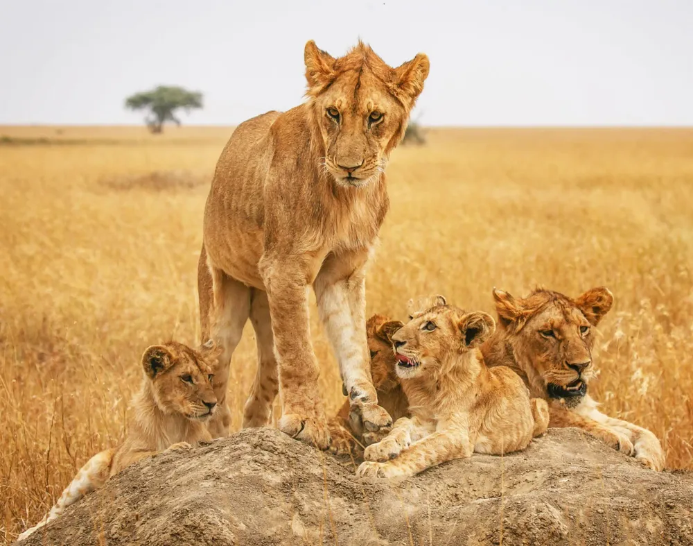

4 Days
Lake Eyasi • Ngorongoro • Manyara
4 Days Authentic Tour with Bushmen, Ngorongoro Crater & Lake Manyara
Experience genuine cultural immersion with the indigenous Hadzabe hunter-gatherers and Datoga blacksmiths at Lake Eyasi, followed by spectacular Big Five tracking on the Ngorongoro Crater floor and Lake Manyara’s flamingo-filled shores.
- Traditional bow-and-arrow bushwalk with Hadzabe bushmen
- Full-day 600m descent game drive in Ngorongoro Caldera
- Lake Manyara alkaline birding and tree-climbing lions
- Private 4x4 pop-top Land Cruiser with professional driver-guide